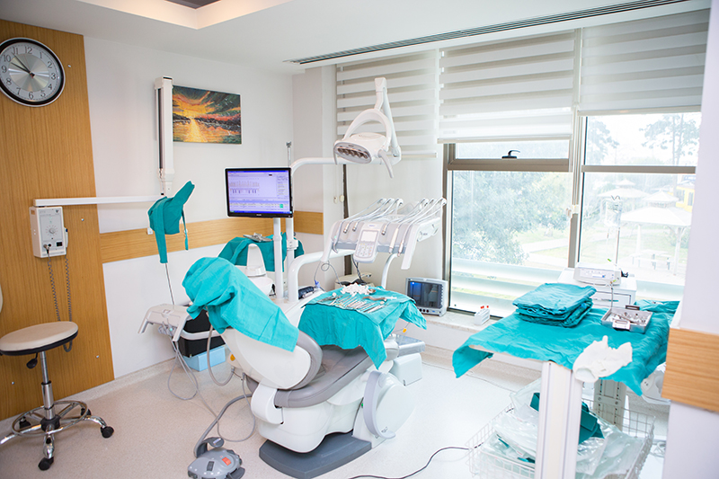
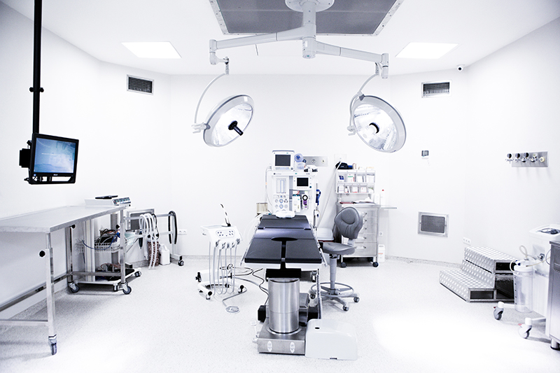
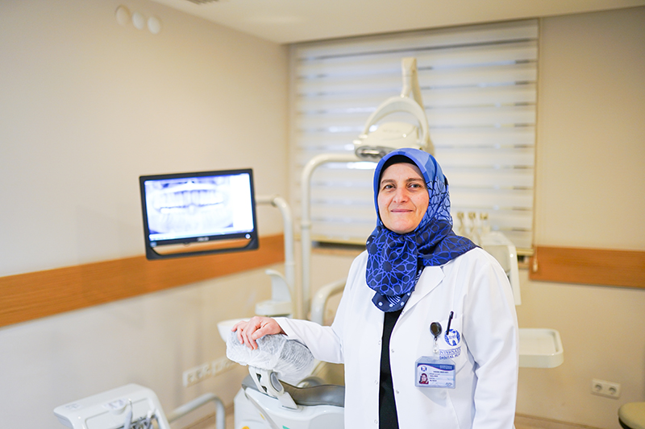
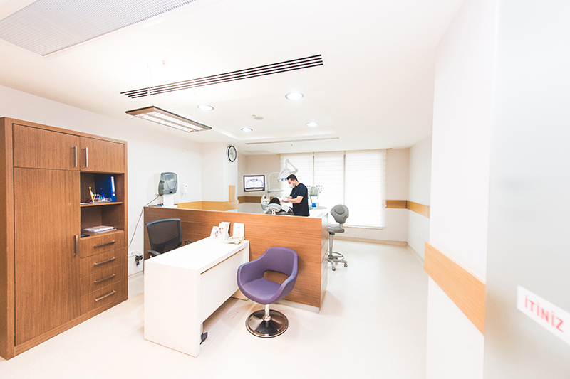

Deneyimli hekim kadromuzla, modern tedavi yöntemlerini kullanarak ağız ve diş sağlığınızı korumayı amaçlıyoruz. Sağlığınız için titiz ve güven odaklı bir hizmet anlayışıyla çalışıyoruz.
Selfie yükleyin, dişlerinizi çerçeveleyin, kaydırın. Fotoğrafınız telefonunuzdan çıkmaz.
Önce fotoğrafınızı yükleyin.
Simülasyon fikir vermek içindir; gerçek sonuç muayene ve dijital gülüş tasarımı (DSD) ile planlanır.
Tedavilerinizi seçin: tahmini fiyat aralığı, Antalya'da kalmanız gereken gün ve gün gün planınız anında çıksın.
Eksik dişlerin tamamlanması amacıyla uygulanan diş kökü tedavisi.
Gerekli görülen durumlarda dişlerin profesyonel yöntemlerle uzaklaştırılması.
Çocuk hastalarımızın diş sağlığı takibi ve koruyucu tedavi uygulamaları.
Çene yapısında sorun yaratan gömülü dişlerin hekim kontrolünde tedavisi.
Diş eti sağlığını korumaya yönelik tedavi ve bakım süreçleri.
Ağız ve diş sağlığınızın genel durumunu değerlendiren düzenli kontroller.




Karmaşık diş tedavilerinden rutin kontrollere kadar geniş bir yelpazede hizmet sunuyoruz.
Tedavi süreçlerinin her aşamasında hastalarımızı bilgilendiriyor, sorularını yanıtlıyoruz.
Klinik genelinde temizlik ve sterilizasyon kurallarını en üst seviyede uyguluyoruz.
Her hastamızın ihtiyacına göre planlanmış, titiz ve dikkatli bir çalışma yürütüyoruz.
📍 Kültür, 3822. Sk. No:6, 07090 Kepez/Antalya
🕑 Pzt–Cum 09:00–18:30 · Cmt 09:00–16:30 · Paz kapalı